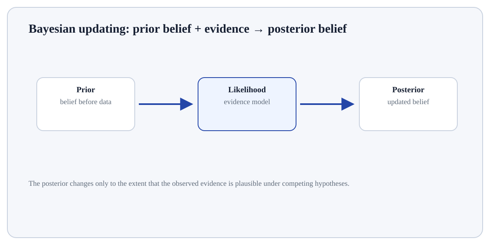

Follow the transformation
Define the random variable/event and probability model.
Compute or estimate probabilities/statistics under the model.
Distinguish a population parameter from a sample statistic.
Random Variables is a probability/statistics concept used to describe uncertainty.
Random Variables is a probability/statistics concept used to describe uncertainty. Probability models connect random outcomes to numerical summaries such as expectation, variance and conditional probability; inference uses the distribution of statistics across hypothetical samples to reason from a sample to a population.
Random Variables matters because probability and statistics describe variation rather than just calculate point summaries. They provide the basis for uncertainty, sampling reasoning, hypothesis tests and probabilistic model interpretation.
Treat this as a sequence of observable decisions rather than one opaque command. Stage 1: Define the random variable/event and probability model. Stage 2: Compute or estimate probabilities/statistics under the model. Stage 3: Distinguish a population parameter from a sample statistic. Final checkpoint: Quantify sampling uncertainty with an interval, posterior or other appropriate method.
Define the random variable/event and probability model.
Compute or estimate probabilities/statistics under the model.
Distinguish a population parameter from a sample statistic.

Define the random variable/event and probability model. This is an input-preparation stage for Random Variables. Verify the relevant type, shape, units, keys, missingness or assumptions before later steps depend on them.
Coin toss random variable X: Heads→1, Tails→0.
P(X=1)=0.5, P(X=0)=0.5.
E[X]=0.5.A random variable maps uncertain outcomes into numeric values so probabilities, expectations and variances can be computed.
For Random Variables, connect the displayed result to the specific input and mechanism above; independently verify one value/state change rather than treating successful execution as proof.
Random variableMaps outcomes to numerical values.ExpectationProbability-weighted long-run average.VarianceExpected squared deviation from the mean.Sampling distributionDistribution a statistic would have across repeated samples.Bayes ruleUpdates a conditional probability by combining prior plausibility and likelihood of evidence.Use Random Variables when the statistical quantity or inferential idea matches the variable type, sampling process and question being asked.
Do not interpret the result beyond the assumptions and design that support it; distinguish descriptive evidence, uncertainty and causal claims.
Build a tiny, inspectable example of Random Variables. First define the random variable/event and probability model. Then compute or estimate probabilities/statistics under the model. Write the expected result before running it, and explain one condition that would make the result misleading or invalid.
Before trusting a result from Random Variables, which check provides the strongest evidence that you understand and applied it correctly?
Step 1Define the random variable/event and probability model.Step 2Compute or estimate probabilities/statistics under the model.Step 3Distinguish a population parameter from a sample statistic.Step 4Use conditional probability when information changes what outcomes are plausible.